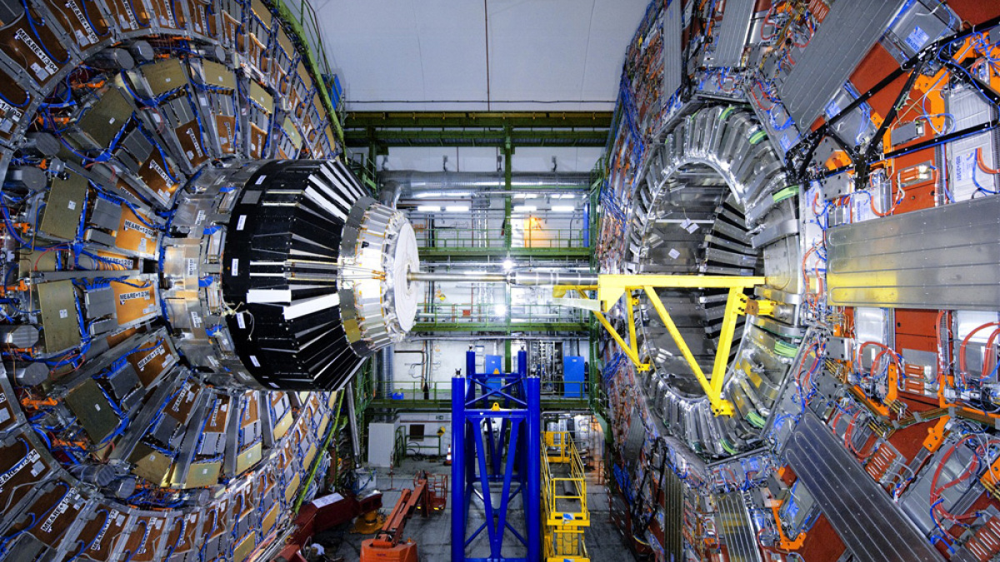

Passioni e interessi
Nel tempo libero coltivo interessi che mi permettono di sviluppare curiosità, disciplina e una mentalità orientata all'apprendimento continuo.
Sport & Crescita personale
Il basket come scuola di disciplina e lavoro di squadra, affiancato da una mentalità ispirata a David Goggins e alla filosofia del miglioramento continuo.
Lettura & Apprendimento
Libri, manga e novel su strategia, leadership, psicologia e innovazione. Opere che stimolano il pensiero critico e la visione dei problemi da prospettive differenti.
Cinema, serie & Animazione
Fantascienza e fantasy come Dr. Stone, Code Geass, 86 Eighty-Six, Attack on Titan e The Flash — per scienza, tecnologia, strategia e sistemi complessi.
Pratico e seguo il basket, uno sport che mi ha aiutato a sviluppare disciplina, spirito di squadra, costanza e capacità di gestione della pressione nei momenti decisionali. Lo considero un contesto utile per allenare competenze trasversali applicabili anche in ambito professionale, come la collaborazione e la resilienza.
Accanto allo sport, nutro un forte interesse per la crescita personale e la mentalità orientata al miglioramento continuo. In particolare, il libro "Can't Hurt Me" di David Goggins ha avuto un forte impatto sul mio modo di affrontare le difficoltà, trasmettendomi valori come autodisciplina, perseveranza e responsabilità personale.
L'approccio dell'autore, ex Navy SEAL e atleta di endurance, enfatizza il superamento dei limiti mentali e la capacità di affrontare le difficoltà con costanza e determinazione. In questo contesto, una delle frasi che meglio rappresenta questa mentalità è:
che sintetizza l'idea che il margine di resistenza e crescita sia spesso molto superiore a quello percepito.
Altre espressioni che riassumono questa filosofia sono "I don't stop when I'm tired. I stop when I'm done" e "Stay hard", che richiamano una mentalità basata sulla continuità, la resilienza e il miglioramento costante.
Nel complesso, queste esperienze hanno contribuito a sviluppare un atteggiamento mentale orientato alla crescita, alla disciplina e al miglioramento progressivo, che considero fondamentali anche in ambito professionale.
Mi piace leggere libri, manga e novel che affrontano temi legati alla strategia, alla leadership, alla psicologia e all'innovazione. Apprezzo particolarmente opere che stimolano il pensiero critico e la capacità di osservare i problemi da prospettive differenti.
Nel tempo libero seguo film, serie TV e opere di animazione, in particolare di fantascienza e fantasy, che affrontano temi legati alla scienza, alla tecnologia, alla strategia, alla leadership e ai sistemi complessi. Al di là dell'aspetto narrativo, apprezzo le opere che stimolano la curiosità e favoriscono una mentalità orientata all'analisi, alla risoluzione dei problemi e all'apprendimento continuo.
Tra quelle che ho maggiormente apprezzato:
- Dr. Stone, per l'approccio fortemente basato sul metodo scientifico e sull'ingegneria. L'opera valorizza osservazione, sperimentazione e miglioramento continuo, affrontando temi che spaziano dalla chimica all'elettrotecnica, dalle telecomunicazioni alla meccanica e all'automazione.
- Code Geass, per gli aspetti legati alla strategia, alla leadership e alla gestione di situazioni complesse. Ho trovato particolarmente interessanti le dinamiche decisionali, il coordinamento delle risorse e i concetti di integrazione tra software, hardware e sistemi meccatronici.
- 86 Eighty-Six, per l'attenzione dedicata alle comunicazioni, ai sistemi autonomi, al coordinamento tra unità e all'impiego di tecnologie avanzate. Molti elementi richiamano i moderni sistemi di comando e controllo e sottolineano l'importanza della cooperazione e della leadership sotto pressione.
- Attack on Titan, per la rappresentazione delle dinamiche organizzative, della gestione delle crisi e della pianificazione strategica. L'opera approfondisce inoltre aspetti psicologici e decisionali legati alla responsabilità e al lavoro di squadra.
- The 100, che ha alimentato il mio interesse verso l'ingegneria dei sistemi, la gestione delle risorse, la cooperazione e gli ambienti complessi, introducendo anche tematiche legate alle stazioni spaziali e ai sistemi chiusi.
- The Flash, per i numerosi riferimenti alla fisica moderna e alla cosmologia. Pur trattandosi di una rappresentazione in parte speculativa, la serie ha contribuito ad accrescere la mia curiosità verso argomenti quali acceleratori di particelle, materia oscura e antimateria. In particolare, mi ha spinto ad approfondire le attività del CERN di Ginevra e del Large Hadron Collider (LHC), il più grande acceleratore di particelle al mondo, utilizzato per studiare le proprietà fondamentali della materia e comprendere fenomeni ancora oggi oggetto di ricerca, come la natura della materia oscura e l'asimmetria tra materia e antimateria.
- Oppenheimer, per la ricostruzione storica e scientifica dello sviluppo della fisica nucleare e del Progetto Manhattan. Il film mi ha permesso di approfondire il contributo della ricerca fondamentale al progresso tecnologico e di riflettere sul rapporto tra innovazione scientifica, responsabilità etica e impatto delle tecnologie avanzate sulla società.
Ritengo che questi interessi riflettano la mia naturale curiosità verso la scienza, la tecnologia e i sistemi complessi, oltre a una forte propensione all'apprendimento continuo e all'approfondimento di tematiche interdisciplinari, caratteristiche che considero importanti anche in ambito professionale.
Parallelamente agli interessi cinematografici, seguo con particolare curiosità gli sviluppi della ricerca scientifica internazionale nei settori della fisica delle particelle, delle tecnologie avanzate e dell'energia da fusione.
Nutro un forte interesse per le attività del CERN di Ginevra, centro di eccellenza mondiale nella ricerca fondamentale, e per il Large Hadron Collider (LHC), il più grande acceleratore di particelle mai realizzato. Mi affascinano in particolare gli studi sulla materia oscura e sull'antimateria, temi che rappresentano alcune delle principali sfide della fisica contemporanea.
Trovo particolarmente interessante come le competenze sviluppate dal CERN nel campo dei magneti superconduttori, dei materiali avanzati e delle tecnologie criogeniche vengano infatti condivise con grandi progetti internazionali, tra cui ITER (International Thermonuclear Experimental Reactor), il più importante programma mondiale dedicato alla fusione nucleare controllata.


Seguire l'evoluzione di ITER, attualmente in costruzione a Cadarache in Francia, ha ulteriormente rafforzato il mio interesse verso i sistemi complessi, la superconduttività, la fisica dei plasmi e le tecnologie necessarie per riprodurre sulla Terra i processi che alimentano il Sole. Trovo particolarmente stimolante la collaborazione internazionale che coinvolge Europa, Stati Uniti, Giappone, India, Cina, Corea del Sud e altri partner, esempio concreto di come la ricerca scientifica e l'ingegneria possano contribuire allo sviluppo di tecnologie sostenibili per il futuro.
Più in generale, considero la ricerca scientifica e le grandi infrastrutture tecnologiche un'importante fonte di ispirazione, poiché dimostrano come la collaborazione interdisciplinare, l'innovazione e la continua ricerca di nuove soluzioni siano elementi fondamentali per affrontare le sfide tecnologiche del futuro.